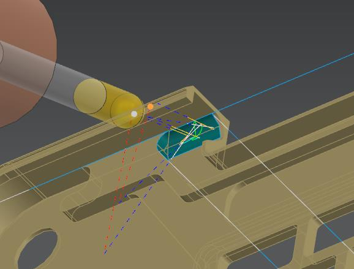

THE CHALLENGE
Plan a process for both sides of a complex part.
The chassis geometry combined thin walls, an undercut, angled grooves, and curved features. The process needed to hold the work securely across two setups while maintaining machine limits and a verified final in-process workpiece.
PROCESS DESIGN
Workholding first; toolpath strategy second.
- Designed a vacuum fixture for the bottom setup and mechanical clamping for the top setup, with a full six-degree-of-freedom workholding check.
- Selected seven Kennametal tools and designed a custom T-cutter for the undercut geometry.
- Calculated spindle speed, feed, material-removal rate, power, and torque, then checked them against machine limits.
- Programmed 30 operations across the two setups, including 5-axis Variable Streamline contouring for curved and angled features.



DFM & VERIFICATION
Identify design issues before they become machining issues.
DFM review identified five classes of geometry that could not be manufactured with the planned process. I documented redesign recommendations around sharp corners, tight clearances, and tool access to undercuts.
The NX in-process workpiece was verified with no gouges or remaining stock in the simulated operations. The process achieved a reported tolerance of ±0.05 mm across 30 operations and two setups.
Reported CAM verification and project tolerance.

TAKEAWAY
Manufacturability is a design constraint, not a final check.
Reviewing access and workholding alongside the geometry helped identify feature changes early and informed the operation sequence, cutter selection, and fixture strategy.